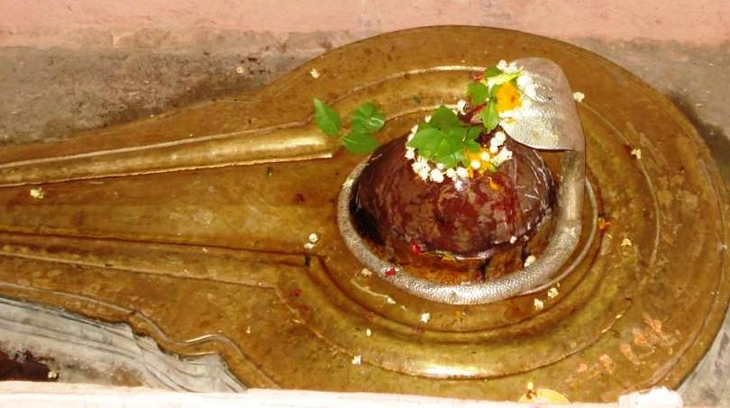

<?xml version="1.0" encoding="UTF-8"?><rss version="2.0"
	xmlns:content="http://purl.org/rss/1.0/modules/content/"
	xmlns:wfw="http://wellformedweb.org/CommentAPI/"
	xmlns:dc="http://purl.org/dc/elements/1.1/"
	xmlns:atom="http://www.w3.org/2005/Atom"
	xmlns:sy="http://purl.org/rss/1.0/modules/syndication/"
	xmlns:slash="http://purl.org/rss/1.0/modules/slash/"
	>

<channel>
	<title>Varuna Sangameshwar &#8211; Varanasi Temples</title>
	<atom:link href="index.html" rel="self" type="application/rss+xml" />
	<link>../../../../../index.html</link>
	<description>Temples of Varanasi as referred to in Kashi Khand</description>
	<lastBuildDate>Thu, 19 Jun 2025 05:16:46 +0000</lastBuildDate>
	<language>en-US</language>
	<sy:updatePeriod>hourly</sy:updatePeriod>
	<sy:updateFrequency>1</sy:updateFrequency>
	<generator>https://wordpress.org/?v=4.6.29</generator>
	<item>
		<title>VARUNA SANGAMESHWAR</title>
		<link>../../../../../shiva-temples/varuna-sangameshwar/index.html</link>
		<pubDate>Tue, 11 May 2010 07:03:02 +0000</pubDate>
		<dc:creator><![CDATA[admin]]></dc:creator>
				<category><![CDATA[Other Shiva Temples (S-Y)]]></category>
		<category><![CDATA[Shiva Temples]]></category>
		<category><![CDATA[Varuna Sangameshwar]]></category>
		<category><![CDATA[lord shri sangameshwar]]></category>
		<category><![CDATA[sangameshwar]]></category>
		<category><![CDATA[sangameshwar photo]]></category>
		<category><![CDATA[varuna]]></category>
		<category><![CDATA[varuna sangameshwar]]></category>

		<guid isPermaLink="false">../../../../../p=476.html</guid>
		<description><![CDATA[Lord Vishnu was describing to Sage Bindu, the various forms in which the former was present in the Holy city of Kashi to bless the devotees. In his form as Adi Keshav, the Lord has installed Sangameshwar Mahaling near Varuna river. By merely worshipping Sangameshwar, the devotee is cleansed of all his sins. (Kashi Khand, [&#8230;]]]></description>
				<content:encoded><![CDATA[<p>Lord Vishnu was describing to Sage Bindu, the various forms in which the former was present in the Holy city of Kashi to bless the devotees. In his form as Adi Keshav, the Lord has installed Sangameshwar Mahaling near Varuna river.</p>
<p style="text-align: left;">By merely worshipping Sangameshwar, the devotee is cleansed of all his sins. (Kashi Khand, Chapters 61 and 97).  It is also believed that performing Rudra Abhishek at Varuna Sangameshwar Ling is equivalent to donary (donation made for religious use) of a Cow to a deserving person.  (Godaan).</p>
<p style="text-align: left;"></p>
<p style="text-align: center;"><strong>(VARUNA SANGAMESHWAR)</strong></p>
<p style="text-align: left;">Ling Puraan eulogises this Ling in Chapter 1 of the supplement as well as in Shlok 87 to 89 and 104 to 107 of Chapter 92.  Devotees who worship this Ling will get rid of all their fears as also <strong>they will get associated with eminent persons.</strong></p>
<p>This ling is located within the purview of a shakti peet called Keshava Peet.  Any ordinary pooja will yield multiple benefits. Mythologically speaking, where two holy rivers join together, the place attains spiritual importance.  Devotees can find Varuna Sangameshwar almost at the point of confluence of Holy Rivers Varuna and Ganga.</p>
<p><strong><span style="text-decoration: underline;">LOCATION OF VARUNA SANGAMESHWAR</span></strong></p>
<p>Varuna Sangameshwar is located at Adi Keshav temple at located at A-37/51, Rajghat Fort. Devotees can travel upto this place by autorickshaw or cycle rickshaw or car.</p>
<h3></h3>
<p>Location of Varuna Sangameshwar as per Google Maps is given below :</p>
<p><a href="https://www.google.com/maps/place/Adi+Keshav+Ghat/@25.3288669,83.0243932,15z/data=!3m1!4b1!4m6!3m5!1s0x398e2fc96ca9762f:0xd72c9629869ba96f!8m2!3d25.328868!4d83.0428259!16s%2Fg%2F11b6dy3165?entry=ttu&amp;g_ep=EgoyMDI1MDEyOS4xIKXMDSoASAFQAw%3D%3D">https://www.google.com/maps/place/Adi+Keshav+Ghat/@25.3288669,83.0243932,15z/data=!3m1!4b1!4m6!3m5!1s0x398e2fc96ca9762f:0xd72c9629869ba96f!8m2!3d25.328868!4d83.0428259!16s%2Fg%2F11b6dy3165?entry=ttu&amp;g_ep=EgoyMDI1MDEyOS4xIKXMDSoASAFQAw%3D%3D</a></p>
<h3></h3>
<p><strong>Please watch our YouTube Video about Varuna Sangameshwar at following Link</strong></p>
<h3></h3>
<p><a href="https://www.youtube.com/watch?v=R2yHgdVtTBk&amp;t=38s">https://www.youtube.com/watch?v=R2yHgdVtTBk&amp;t=38s</a></p>
<h3></h3>
<p>&nbsp;</p>
<h3>TYPES OF POOJA</h3>
<p>The place of worship is open from 06.00 a.m. to 12.00 Noon and from 04.00 p.m. to 10.00 p.m.  The timings may be flexible.</p>
<p>&nbsp;</p>
]]></content:encoded>
			</item>
	</channel>
</rss>
